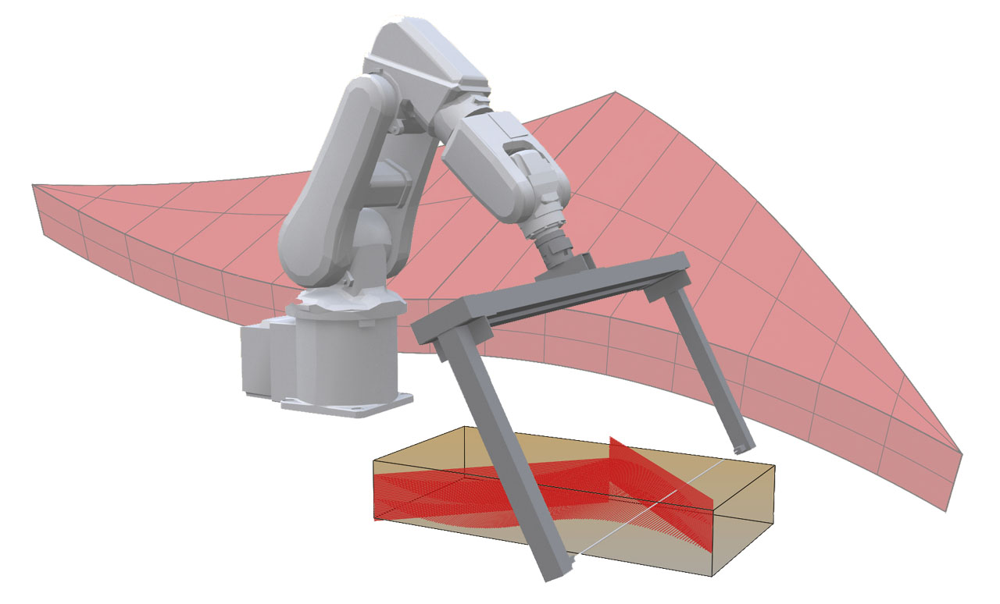
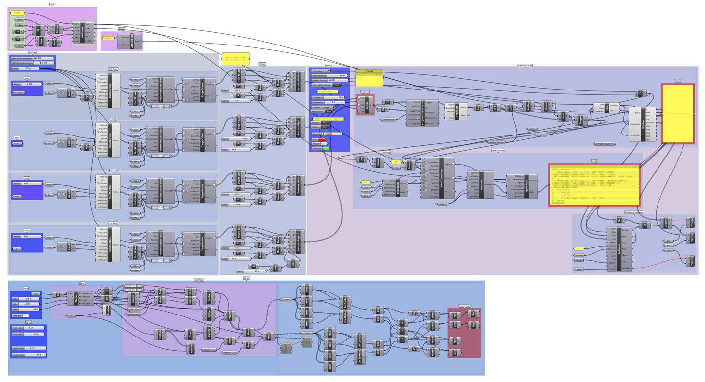
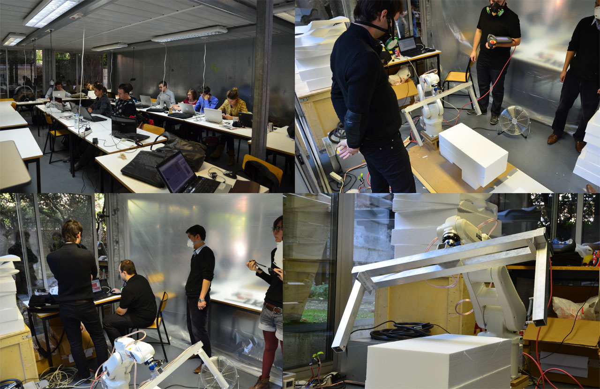

Mathieu Venot
[Naval] | {Computation} | Architecture
D5W_ DIGITAL DESIGN LITERACY 2
05/10/2012 14:00 Categories: Other Work / ENSAPM
// ROBOTIC AUTOMATION




Modelisation of an arbitrary shape, generate a toolpath in HAL with Grasshopper, simulation, export the code, then hotwire cutting by the robot. The objective is to generate a clean toolpath without errors by the robot (collision, singularity...).
-------------------------
Thibault SCHWARTZ : D3W-D5W Workshops
Digital-Knowledge : Intensifs Numériques | 2nd Week | Gp.3
-------------------------
{REFERENCES}
- ARCHITECTURE / ENGINEERING (AADRL / Gehry Technologies / GSA ENSAPM / RFR / WAO)
- OLIVIER BERNARD & NICOLAS LEDUC (Constructive geometry, innovative glass & structural design) [2012]
- CLEMENS PREISINGER (Make your forces dance - with Karamba) [2012]
- THIBAULT SCHWARTZ (HAL for ABB Robots programming) [2012]
Software : David Rutten Grasshopper 3D / McNeel Rhinoceros 3D / Thibault Schwartz HAL for Grasshopper 3D
Teachers : Félix AGID / Thibault SCHWARTZ
Essay / ENSAPM (1)
Internship / ENSAPM (1)
Other Work / ENSAPM (7)
Projects / ENSAPM (7)
Teaching / ENSAPM (4)
Internship / ENSAPM (1)
Other Work / ENSAPM (7)
Projects / ENSAPM (7)
Teaching / ENSAPM (4)
Feb 2015
Jan 2015
Jan 2014
Dec 2013
Jan 2013
Jan 2015
Dec 2014
Nov 2014
Oct 2014
Sep 2014
Aug 2014
Jul 2014
Jun 2014May 2014
Apr 2014
Mar 2014
Feb 2014Jan 2014
Dec 2013
Nov 2013
Oct 2013Sep 2013
Aug 2013
Jul 2013
Jun 2013May 2013
Apr 2013
Mar 2013
Feb 2013Jan 2013
Dec 2012
Nov 2012
Oct 2012Sep 2012
Aug 2012
Jul 2012
Jun 2012May 2012
Apr 2012
Mar 2012
Feb 2012
Jan 2012Dec 2011
Nov 2011Oct 2011
Sep 2011Aug 2011
Jul 2011
Jun 2011
May 2011